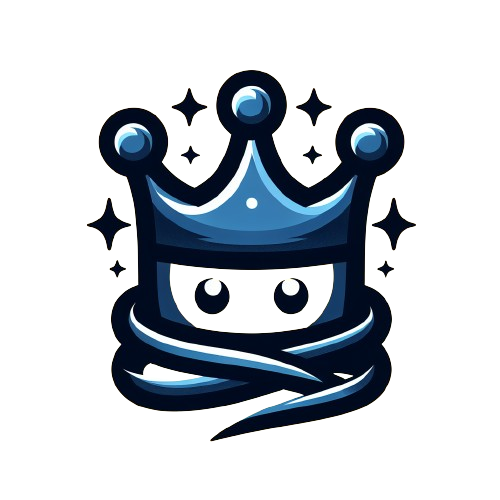

Realiz
Try do a good quiz!!
It's funny
I want to play one!
I want to create one!
Quiz about
Genshin
Quiz about
Anime
Quiz about
Robim
In the anime "Naruto", what is the name of Naruto's signature move?
A) Chidori
B) Rasengan
C) Sharingan
D) Byakugan
Which anime features a young boy who becomes the captain of a pirate ship?
A) Bleach
B) Fairy Tail
C) One Piece
D) Attack on Titan
In "Dragon Ball Z", who is Goku's brother?
A) Vegeta
B) Raditz
C) Gohan
D) Piccolo
Which anime is set in the city of Ikebukuro and features a headless rider?
A) Death Note
B) Durarara!!
C) Blue Exorcist
D) Tokyo Ghoul
In "My Hero Academia", what is the name of the school that the main characters attend?
A) Beacon Academy
B) Shuchiin Academy
C) U.A. High School
D) Otonokizaka High School
Who is the Anemo Archon in Genshin Impact?
A) Diluc
B) Venti
C) Zhongli
D) Albedo
Which of the following materials is needed to ascend the character Xiangling?
A) Cor Lapis
B) Jueyun Chili
C) Valberry
D) Wolfhook
What is the name of the Electro Archon?
A) Ningguang
B) Beidou
C) Raiden Shogun
D) Fischl
Which element does the character Tartaglia (Childe) use (vision)?
A) Hydro
B) Pyro
C) Geo
D) Cryo
In which region can you find the Statue of The Seven at Windrise?
A) Mondstadt
B) Liyue
C) Inazuma
D) Sumeru
Xrob prefers...
A) read manga / watch anime
B) play games
C) walk
D) programming
What is Robinations' favorite artist?
A) Måneskin
B) Palaye Royale
C) Panic! at the Disco
D) System of a Down
What is Robinations' favorite anime/manga?
A) One Piece
B) Land of the Lustrous
C) Pandora Hearts
D) Tower Of God
What are the names of Robim's cats?
A) Pequeno and Shantie
B) Grande and shanty
C) Pequena and Xanta
D) Pequena and Shanty
What is Robinations' favorite game?
A) Genshin Impact
B) Honkai Star Rail
C) Valorant
D) Wuthering Waves
Your Result is:
from 5 questions
Reset
Comming
Soon
Reset